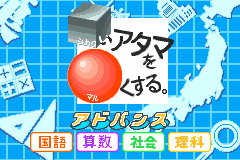

Shikakui Atama o Maruku Suru. Advance - Kokugo, Sansuu, Shakai, Rika (Japan)
Stateless / Passcode 💾 MultiBoot 🎮 4P Link 🔌 Game Boy Player Rumble (libgbp)
Cartridge Identity
- Game Code
B4RJ(FamilyB4R)- Header Title
SIKAMARUKOSA- Maker / Revision
0Q/ rev0- ROM Size
- 4.0 MiB (4,194,304 B)
- Save Media
None / Unknown- SHA-256
81cc3380ac26d5a32845481a6e305a339d907195e98470a07054f5b8c06aeb4d- Engine / SDK Group
comm-001(196 families)
Screenshots


Niche & Rare Accessories
Detected niche/rare GBA accessory support: 🔌 Game Boy Player Rumble (libgbp).
Full 343-ROM corpus breakdown in the Cartridge Hardware & Niche Accessories Reference · auto-detected from ROM bytes via
gbakit inspect.
- Game Boy Player Rumble (libgbp)
- SIO
0x04000120· ACK0x8002@0x001a38
Link Cable & Multiplayer Communications
This title contains detected communication capabilities: 💾 MultiBoot 🎮 4P Link.
Detailed protocol specifications, SIO registers, Joybus commands, and MultiBoot sequences are documented in the Link & Multiplayer Reference.
- Multi-Player SIO (4P)
- 16-bit ring network · SIOCNT (
0x04000128) literals:0x00191c,0x001bd0· SIODATA32/SIOMULTI0 (0x04000120) literals:0x001994,0x001a18,0x001a60 - Single-Cart MultiBoot
- Single-Cartridge MultiBoot (Download Play) client/server handler · Thumb SWI 0x25 (
0xDF25):0x051f16,0x1549b6,0x1a89c4,0x1e74aa
Cartridge Storage Architecture: Stateless / Passcode
Zero non-volatile battery hardware: This cartridge PCB contains ROM only (no SRAM, Flash, or EEPROM chips). Progression is preserved via on-screen passcodes or session-only gameplay. No
.sav file is generated or required.
ROM Assets, Compression & Audio
- BIOS Compression
- LZ77 (
0x10): 1,088 streams · RLE (0x30): 0 streams - ROM Pointer Tables
- 20 tables (3 pointing to validated compressed streams)
- SDK Backup Tags
EEPROM_V124
Asset Map (formatkit.asset-map.v1)
Download B4RJ-r0-81cc3380ac26d5a3.asset-map.json.gz (50,719 B (49.5 KiB)) Verified PASS · 41.71% coverage
| Metric | Bytes / Value | Entries |
|---|---|---|
| Identified | 371,291 B (362.6 KiB) (8.85%) | 447 |
| Mapped | 0 B (0.00%) | 0 |
| Opaque | 1,377,980 B (1.31 MiB) (32.85%) | 1 |
| Unknown | 2,445,033 B (2.33 MiB) (58.29%) | 408 |
| Total ROM Size | 4,194,304 B (4.00 MiB) | 856 |
| Coverage % | 41.71% | — |
| Entries w/ Code Refs | 468 / 856 (54.67%) | — |
Top Identified Formats: compress.bios-lz77 (141 · 349,931 B (341.7 KiB)) · gfx.gba-palette (304 · 20,768 B (20.3 KiB)) · audio.m4a-song-table (1 · 400 B) · gba.rom-header (1 · 192 B)
Largest unknown Extents (Headerless / Custom Asset Candidates)
| Offset | Size | Shannon Entropy | Code Refs |
|---|---|---|---|
0x001EE7E7 | 564,197 B (551.0 KiB) | 6.226 bits/B | 0 |
0x00129598 | 537,336 B (524.7 KiB) | 5.942 bits/B | 0 |
0x00071098 | 193,388 B (188.9 KiB) | 3.326 bits/B | 0 |
0x000B1534 | 136,036 B (132.8 KiB) | 4.061 bits/B | 0 |
0x00290020 | 129,316 B (126.3 KiB) | 7.236 bits/B | 0 |
gzip -dk B4RJ-r0-81cc3380ac26d5a3.asset-map.json.gz && gbakit map verify rom.gba B4RJ-r0-81cc3380ac26d5a3.asset-map.json
gbakit assets export rom.gba --asset-map B4RJ-r0-81cc3380ac26d5a3.asset-map.json -o out/Text, Fonts & Scene Data
- Primary Text Encoding
- LZ77-compressed ASCII (
200Shift-JIS runs ·1LZ77 ASCII blocks) - Font & VWF Indicators
- No VWF Table 1bpp Font · BIOS SWIs: BitUnPack
0x10:18· LZ770x11/12:51· Huffman0x13:14· RLE0x14/15:14 - Scene & Packaging
8ROM pointer tables (≥32 entries,1≥200) ·52relativeu32TOCs ·155OAM metasprite hits